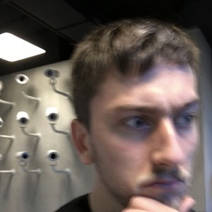

Quality Assurance at Total Onion
How we keep every layer flawless: we pair innovation with practical solutions, applying modern QA skills and tools to deliver first-class quality. We don’t see a website as a straightforward path — we see an expanding root system, covering everything from user accessibility to the key structured pages that guide people to what they need.
Life in QA at Total Onion
Our QA engineers are part of the projects from day one, working closely with devs, marketing, and brand — pulling requirements out of designs, shaping test coverage, and shipping with confidence. Here’s what a few of them say about testing at Total Onion.

“Three years ago I took a leap of faith and started a QA internship with Total Onion. From the get-go I was welcomed by the team, learning head-first about QA and how to understand URLs. It’s so rewarding to learn as you work — your progress and your decision-making get sharper over time. If you’re looking for perfection and innovation, then QA may be the role for you.”
Arron Canning (Sa1ntac)
QA Engineer
Will add if consent is given by respected member.
James Stott
QA Lead